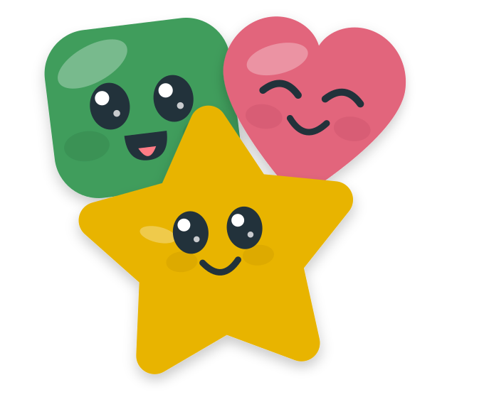
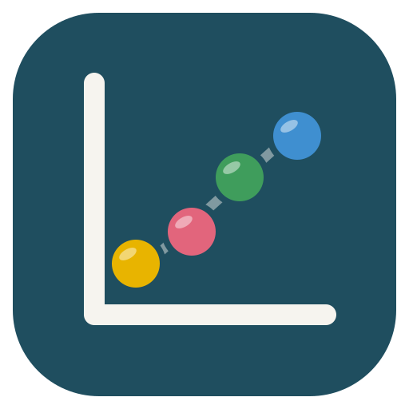

Shape Up
Learning games made of shapes. Drag, tap and guess your way to getting in shape. No account needed.
Pick a game How it worksThe games

Shapes and Language
Solve puzzles with linguistics.
Play →
Trial and Error
Solve puzzles with research methods.
Play →Bag of Shapes
Bayesian statistics from a bag of circles and squares.
Play →R from zero
Read and build R code with tiles.
Play →Models and scales
Read regression and mixed-model tables.
Play →What is different
- Starts lower.Each game begins before the textbook does, and a short placement test lets you skip what you know.
- Visual, not quizzes.You move things to answer. Words for ideas arrive after you have met the idea.
- Small steps.Five right in a row to finish a level. Two hearts. Nothing to calculate.
- Yours alone.Progress lives in your browser. Nothing is sent anywhere.